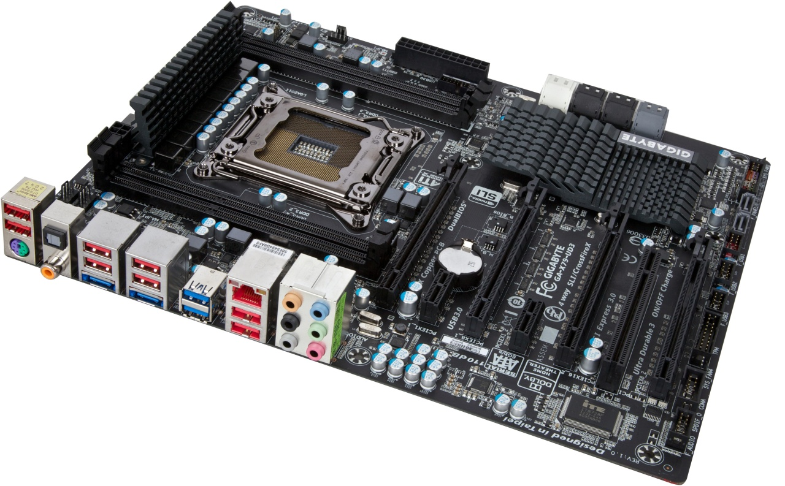

La scheda madre o scheda di sistema, anche conosciuta con i termini inglesi motherboard ("scheda madre") o mainboard ("scheda principale"), abbreviata MB, M/B, mobo, è una parte fondamentale di un moderno personal computer: sotto forma di scheda elettronica principale raccoglie in sé tutta la circuiteria elettronica e i collegamenti di interfaccia tra i vari componenti interni principali del PC (CPU, memoria e le altre schede elettroniche montate o alloggiate sopra) comprendendo quindi anche i bus di espansione e le interfacce verso le periferiche esterne. È responsabile dunque della trasmissione e temporizzazione corretta di molte centinaia di segnali diversi, tutti ad alta frequenza e sensibili ai disturbi, tra processore e periferiche interne e viceversa. La sua buona realizzazione è quindi un fattore chiave per le prestazioni e l'affidabilità dell'intero computer.
 Descrizione